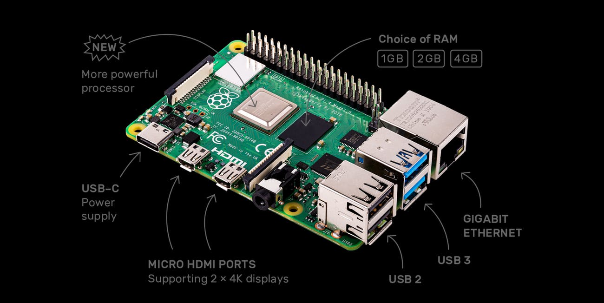

RASPBERRY PI 4
Specifiche tecniche e utilizzi del Raspberry pi 4
SPECIFICHE
UTILIZZO
HOME PAGE
PRODOTTI
Raspberry PI 3 b
Raspberry PI 2
Raspberry PI zero

Elenco dei componenti
- 1 o 2 o 4 GB di memoria RAM DDR4(è possibile scegliere tra i diversi tipi di RAM)
- oC Broadcom BCM2711 con CPU quad core Cortex A72 a 1,5 GHz
- una porta Gigabit Ethernet (stavolta con banda piena di 1000 Mbps)
- 2 porte USB 3.0, 2 porte USB 2.0, una porta USB Type-C (per l’alimentazione)
- 2 porte micro HDMI (entrambe supportano display fino a 4K 60 Hz)
- chip WiFi ac e Bluetooth 5.0 integrati
- lettore microSD integrato
- Configurazione a 40 GPIO pin
Questo sito web è stato creato e curato da Giovanni Fiorito :)